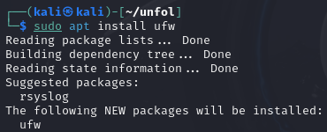
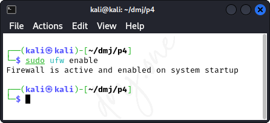
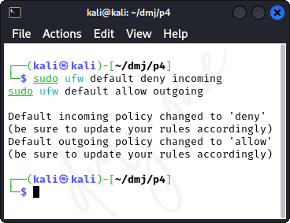
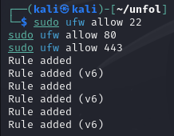
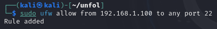
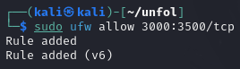
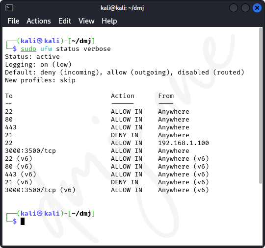
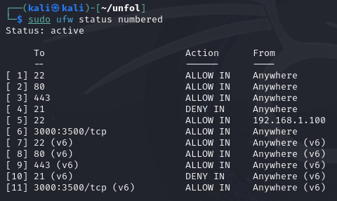
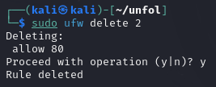
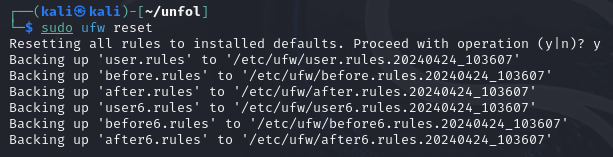

Practical 9: Install and Configure Network Firewall and Ports on Kali Linux
This practical guide explains how to install and configure a network firewall and manage port settings on Kali Linux. Kali Linux is a Debian-derived Linux distribution designed for digital forensics and penetration testing. Managing firewalls and ports is crucial for securing the system against unauthorized access and threats.
9.1 Installing UFW (Uncomplicated Firewall)
UFW (Uncomplicated Firewall) is an easy-to-use interface for managing netfilter, which is the standard firewall configuration tool provided by Linux. We'll start by installing UFW.
sudo apt update
sudo apt install ufw

Figure: Install Uncomplicated Firewall
Once installed, enable UFW to start on boot and activate it:
sudo ufw enable

Figure: Verify if Uncomplicated Firewall is enabled
9.2 Configuring Default Policies
Set the default policies for incoming and outgoing connections. Typically, the default is to deny all incoming connections and allow all outgoing connections to block unsolicited requests while allowing your system to communicate outwardly.
sudo ufw default deny incoming
sudo ufw default allow outgoing

Figure: Configuring Default Policies
9.3 Managing Specific Ports
To secure the system further, manage the access rules for specific ports. For example, to allow SSH (port 22), HTTP (port 80), and HTTPS (port 443):
sudo ufw allow 22
sudo ufw allow 80
sudo ufw allow 443

Figure: Managing Specific Ports
If you want to deny access to a specific port, such as FTP (port 21), use:
sudo ufw deny 21
9.4 Advanced Port Management
To allow services only from a specific IP address or subnet, specify the source. For instance, to allow SSH access only from the IP address 192.168.1.100:
sudo ufw allow from 192.168.1.100 to any port 22

Figure: Advanced Port Management
To allow network traffic through a specific range of ports, such as TCP ports 3000 to 3500:
sudo ufw allow 3000:3500/tcp

Figure: Advanced Port Management
9.5 Monitoring and Adjusting Firewall Rules
It is important to regularly monitor the firewall settings to ensure they meet your security requirements. Use the following command to check the status of UFW and list all active rules:
sudo ufw status verbose

Figure: Monitoring and Adjusting Firewall Rules
To remove a rule, use the delete command followed by the rule number. First, list the numbered rules:
sudo ufw status numbered

Figure: Monitoring and Adjusting Firewall Rules
Then delete the specific rule. For example, to delete rule number 2:
sudo ufw delete 2

Figure: Monitoring and Adjusting Firewall Rules
9.6 Resetting Firewall Configuration
If you need to reset all configurations to the default and start afresh, use the reset command:
sudo ufw reset

Figure: Resetting Firewall Configuration
This will disable UFW and delete all active rules, allowing you to reconfigure the firewall from a clean slate.